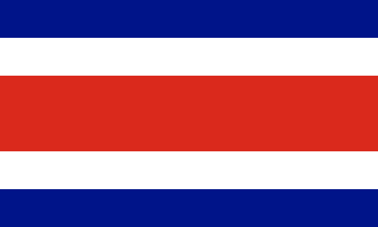

About Me

Hi, I’m Alejandro, a passionate learner and tech enthusiast from Costa Rica. With a strong background in networking and currently pursuing software development at BYU, I thrive on tackling complex challenges and continuously improving my skills.
San José, Costa Rica

San José, Costa Rica’s capital, is a lively city in the Central Valley, surrounded by mountains and volcanoes. It’s known for its cultural landmarks like the National Theatre, bustling markets, and museums showcasing Costa Rican history. A gateway to nature and adventure, San José blends urban life with easy access to lush landscapes and coffee plantations.